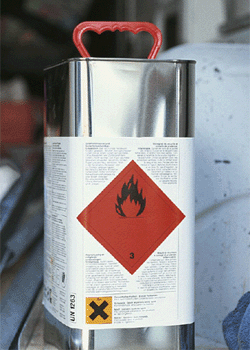
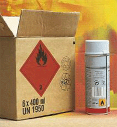

 | Gefahrzettel (rote Raute mit Flammensymbol), UN-Nummer und Gefahrensymbol nach Gefahrstoffverordnung (orangenes Quadrat mit Andreaskreuz) sind auf der Außenverpackung angebracht. |
Gefahrgüter sind deutlich und dauerhaft mit den Kennzeichnungsnummern zu beschriften. Der Kennzeichnungsnummer sind die Buchstaben "UN" voranzustellen.
Alle Gefahrgüter müssen außerdem mit Gefahrzetteln versehen sein. Gefahrzettel sind Aufkleber in der Form auf die Spitze gestellter Quadrate mit bestimmten, den Gefahrgütern zugeordneten Gefahrensymbolen. In der unteren Ecke ist die Nummer der Gefahrgutklasse angegeben. Umweltgefährdende Gefahrgüter müssen zusätzlich mit dem Kennzeichen für umweltgefährdende Stoffe versehen werden. Die Gefahrzettel müssen deutlich sichtbar auf den Versandstücken angebracht sein. Für das Anbringen der Gefahrzettel ist der Absender verantwortlich.
Bei Druckgasflaschen haben die Gefahrzettel geringere Abmessungen und sind auf dem Flaschenhals angebracht.
Leere, ungereinigte Verpackungen dürfen mit der Aufschrift und den Gefahrzetteln des zuletzt darin enthaltenen Gutes beschriftet sein.
Viele Gefahrgüter der Bauwirtschaft werden in so genannten zusammengesetzten Verpackungen transportiert. Diese bestehen aus einer Innen- und einer Außenverpackung.
So ist bei einem Karton mit Farbspraydosen der Karton die Außenverpackung und die Farbspraydosen sind die Innenverpackung. Die Aufschrift und Bezettelung befinden sich nur auf der Außenverpackung. Einzelne Dosen dürfen nicht ohne besondere Schutzmaßnahmen transportiert werden.

Der Karton ist die Außenverpackung, und die Farbspraydose (Druckgaspackung) ist die Innenverpackung für das Farbaerosol.